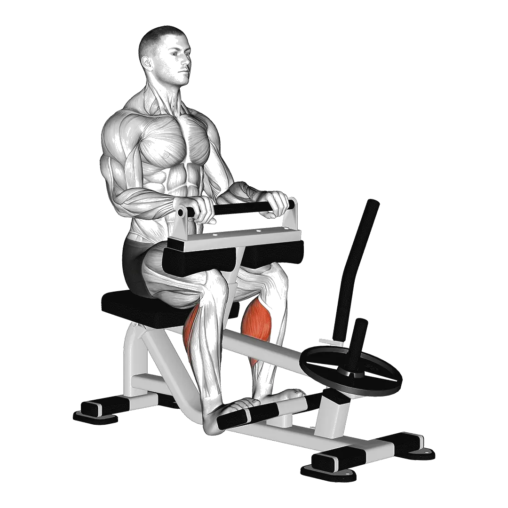

Seated Calf Raise
Seated Calf Raise mostra carga média e padrões de força como referência para pernas. Músculos principais: Adutores.

Carga média: Intermediário
Referência para uma pessoa de nível intermediário.
Homens
221 lb
Mulheres
153 lb
Carga média de Seated Calf Raise [1RM]
| Nível | ||
|---|---|---|
| Iniciante | 49 lb | 30 lb |
| Novato | 118 lb | 78 lb |
| Intermediário | 221 lb | 153 lb |
| Avançado | 358 lb | 253 lb |
| Elite | 518 lb | 371 lb |
Nota: estes padrões são estimativas de 1RM baseadas em atletas médios. Peso corporal, idade e outros fatores pessoais podem afetar os valores. Veja as tabelas detalhadas abaixo.
Padrões de força de Seated Calf Raise (lb)
Homens por peso corporal (lb) [1RM]
| Peso corporal | Iniciante | Novato | Intermediário | Avançado | Elite |
|---|---|---|---|---|---|
| 110 | 18 | 63 | 140 | 247 | 377 |
| 120 | 23 | 73 | 154 | 265 | 400 |
| 130 | 29 | 82 | 168 | 283 | 421 |
| 140 | 34 | 92 | 181 | 300 | 442 |
| 150 | 40 | 101 | 194 | 317 | 462 |
| 160 | 46 | 110 | 206 | 332 | 481 |
| 170 | 52 | 118 | 218 | 347 | 499 |
| 180 | 57 | 127 | 229 | 362 | 516 |
| 190 | 63 | 135 | 240 | 376 | 533 |
| 200 | 68 | 143 | 251 | 389 | 549 |
| 210 | 74 | 151 | 262 | 402 | 564 |
| 220 | 79 | 159 | 272 | 415 | 579 |
| 230 | 85 | 167 | 282 | 427 | 594 |
| 240 | 90 | 174 | 292 | 439 | 608 |
| 250 | 96 | 182 | 301 | 451 | 621 |
| 260 | 101 | 189 | 310 | 462 | 635 |
| 270 | 106 | 196 | 319 | 473 | 648 |
| 280 | 111 | 203 | 328 | 484 | 660 |
| 290 | 116 | 209 | 337 | 494 | 672 |
| 300 | 121 | 216 | 345 | 504 | 684 |
| 310 | 126 | 223 | 353 | 514 | 696 |
Homens por idade [1RM]
| Idade | Iniciante | Novato | Intermediário | Avançado | Elite |
|---|---|---|---|---|---|
| 15 | 42 | 100 | 189 | 304 | 441 |
| 20 | 48 | 115 | 216 | 348 | 505 |
| 25 | 49 | 118 | 221 | 358 | 518 |
| 30 | 49 | 118 | 221 | 358 | 518 |
| 35 | 49 | 118 | 221 | 358 | 518 |
| 40 | 49 | 118 | 221 | 358 | 518 |
| 45 | 47 | 112 | 210 | 339 | 491 |
| 50 | 44 | 105 | 197 | 318 | 461 |
| 55 | 40 | 97 | 182 | 294 | 426 |
| 60 | 37 | 88 | 166 | 269 | 389 |
| 65 | 33 | 80 | 150 | 243 | 352 |
| 70 | 30 | 72 | 135 | 218 | 316 |
| 75 | 27 | 64 | 121 | 195 | 282 |
| 80 | 24 | 57 | 108 | 174 | 252 |
| 85 | 21 | 51 | 97 | 156 | 226 |
| 90 | 19 | 46 | 87 | 141 | 204 |
Mulheres por peso corporal (lb) [1RM]
| Peso corporal | Iniciante | Novato | Intermediário | Avançado | Elite |
|---|---|---|---|---|---|
| 90 | 12 | 46 | 104 | 186 | 286 |
| 100 | 16 | 52 | 114 | 199 | 302 |
| 110 | 19 | 59 | 123 | 211 | 317 |
| 120 | 23 | 65 | 132 | 223 | 331 |
| 130 | 26 | 71 | 140 | 233 | 344 |
| 140 | 30 | 76 | 148 | 243 | 356 |
| 150 | 33 | 82 | 155 | 253 | 368 |
| 160 | 36 | 87 | 163 | 262 | 379 |
| 170 | 40 | 92 | 170 | 271 | 390 |
| 180 | 43 | 97 | 176 | 279 | 400 |
| 190 | 46 | 102 | 183 | 287 | 409 |
| 200 | 49 | 106 | 189 | 295 | 418 |
| 210 | 52 | 111 | 195 | 302 | 427 |
| 220 | 55 | 115 | 201 | 310 | 436 |
| 230 | 58 | 119 | 206 | 317 | 444 |
| 240 | 61 | 123 | 212 | 323 | 452 |
| 250 | 64 | 127 | 217 | 330 | 460 |
| 260 | 67 | 131 | 222 | 336 | 467 |
Mulheres por idade [1RM]
| Idade | Iniciante | Novato | Intermediário | Avançado | Elite |
|---|---|---|---|---|---|
| 15 | 25 | 66 | 130 | 215 | 316 |
| 20 | 29 | 76 | 149 | 246 | 362 |
| 25 | 30 | 78 | 153 | 253 | 371 |
| 30 | 30 | 78 | 153 | 253 | 371 |
| 35 | 30 | 78 | 153 | 253 | 371 |
| 40 | 30 | 78 | 153 | 253 | 371 |
| 45 | 28 | 74 | 145 | 240 | 352 |
| 50 | 26 | 69 | 136 | 225 | 331 |
| 55 | 24 | 64 | 126 | 208 | 306 |
| 60 | 22 | 58 | 115 | 190 | 279 |
| 65 | 20 | 53 | 104 | 172 | 252 |
| 70 | 18 | 47 | 93 | 154 | 226 |
| 75 | 16 | 42 | 83 | 138 | 202 |
| 80 | 14 | 38 | 74 | 123 | 181 |
| 85 | 13 | 34 | 67 | 110 | 162 |
| 90 | 12 | 31 | 60 | 99 | 146 |
Nota: uma barra padrão de academia geralmente pesa 44 lb.
Registre e analise no app Shiba
Revise carga, repetições e progresso em um só lugar.
Como ler a tabela
| Nível | Descrição | Distribuição |
|---|---|---|
| Iniciante | Aprendeu a forma correta e treinou consistentemente por pelo menos 1 mês. | Base 5% |
| Novato | Treinou consistentemente por pelo menos 6 meses. | Top 80% |
| Intermediário | Treinou consistentemente por pelo menos 2 anos. | Top 50% |
| Avançado | Treinou consistentemente por mais de 5 anos. | Top 20% |
| Elite | Treinou especificamente este exercício por mais de 5 anos. | Top 5% |
Outros exercícios
Pernas
Smith Machine Squat
Pernas / Máquina
Hip Abduction
Pernas
Good Morning
Pernas
Zercher Squat
Pernas
Barbell Lunge
Pernas / Barra
Hip Adduction
Pernas
Overhead Squat
Pernas
Barbell Calf Raise
Pernas / Barra
Dumbbell Squat
Pernas / Halteres
Split Squat
Pernas
Dumbbell Calf Raise
Pernas / Halteres
Cable Pull-Through
Pernas / Cabo